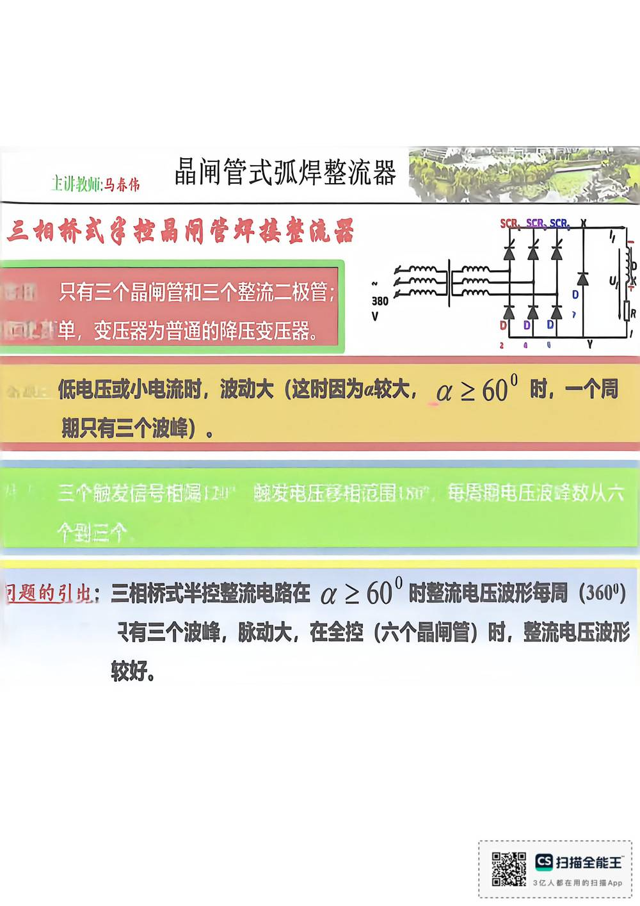

13 手写笔记/1~5周/h-w1-046 晶闸管式弧焊整流鈭
h-w1-046 晶闸管式弧焊整流鈭
📷 原图：
1~5周 焊接电源(1).pdf第 46 页（整页扫描，本库内嵌h-w1-046.jpg）
晶闸管式弧焊整流鈭

本页文字（OCR 整理）
- 晶闸管式弧焊整流鈭
- 三相桥式军控晶闸管焊换整洗器
- 只有三个最闸管和三个整流二极管；
- 回！新单，变压器为普通的降压变压器。
- 低电压或小电流时，波动大（这时因为a较大，α≥60°时，一个周
- 期只有三个波峰）。
- 三个融友信号梅處1204
- 瞭度屯压感相花園150”，
- 每為期电压浪峰效从六
- 个国三个
- 习题响引典：三相桥式半控整流电路在α.≥60°时整流电压波形每局（3609）
- 只有三个波峰，脉动大，在全控（六个晶闸管）时，整流电压波形
OCR 说明
文字由 macOS Vision 识别手写体/翻拍页面得到，错字难免（如"弧"误识为"孤"）；重点标记据此推断，请以页图为准。
对应讲义页
关联
- ← 上一页 · 总览 · 下一页 →
- 讲义：00 第5章 晶闸管整流器 导航 · 概念：04 概念地图